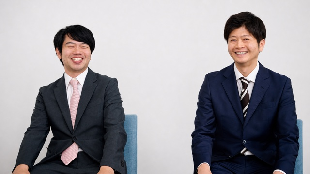
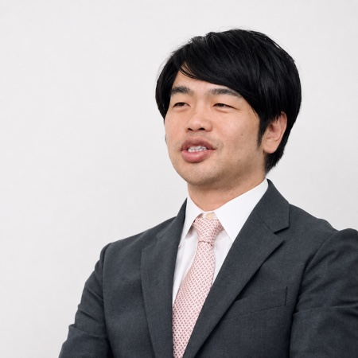
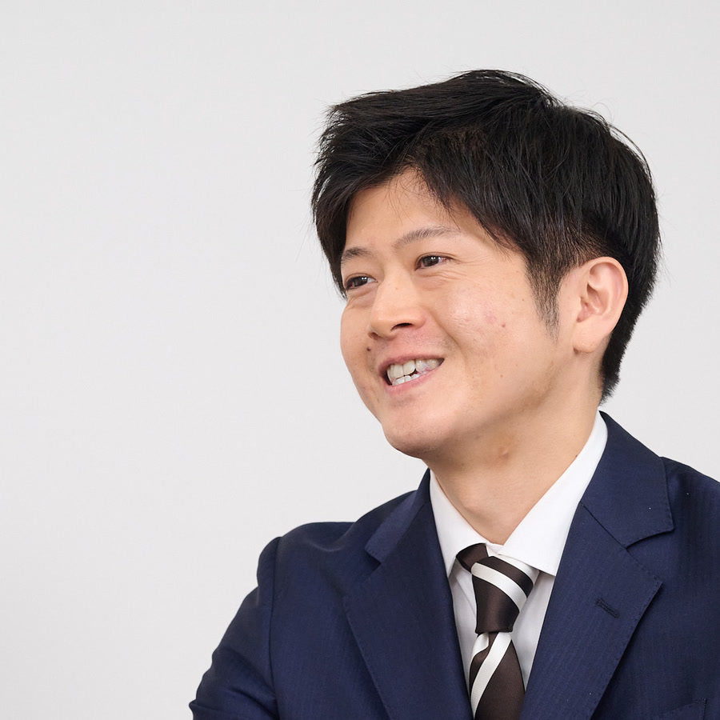
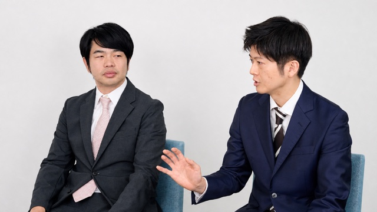
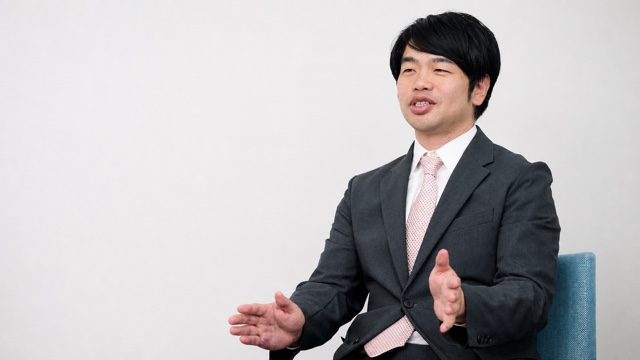
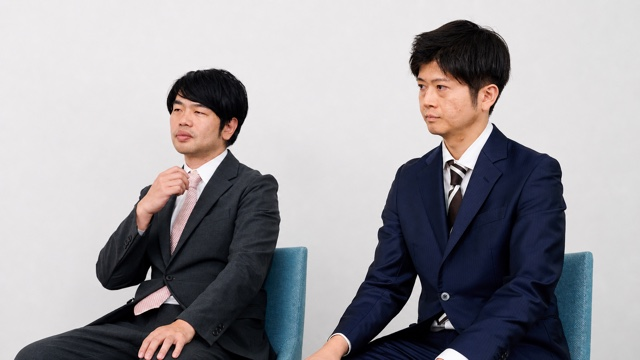
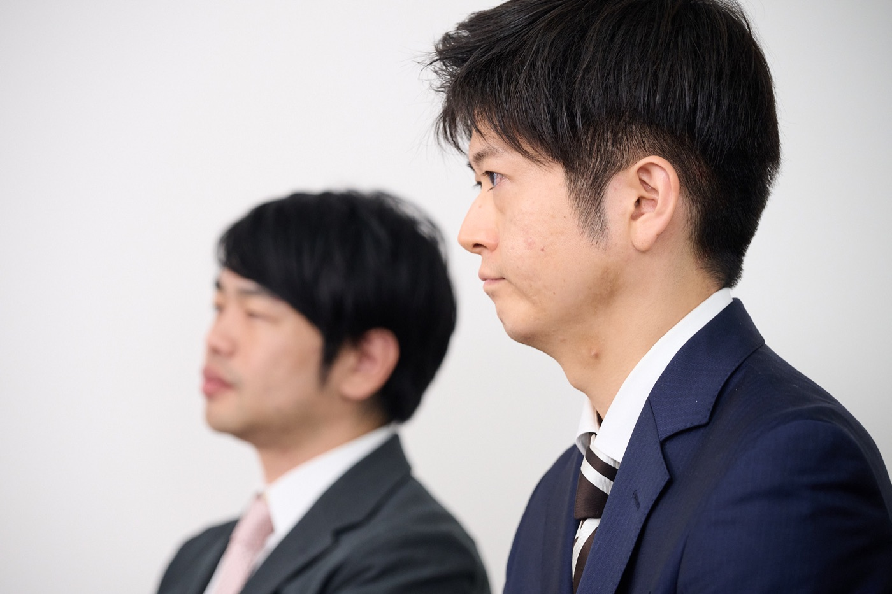

全3回連載
医師フリートーク
医師の意思決定・
本音・AI時代の判断軸
正しい情報だけでは、診療は決まらない
第2回医師の本音は、問いと場に表れる
第3回AIが広がるほど、人の判断軸が問われる

対談者この記事の話し手

井林 雄太 先生
福岡ハートネット病院 糖尿病内科医師／こたべ井林クリニック 副院長（内科・糖尿病・甲状腺内科・眼科）／株式会社S.H. 取締役／一般社団法人 正しい医療知識を広める会 取締役
医師18年目。国立大学医学部卒。日本内分泌学会・日本糖尿病学会・日本内科学会等、複数の専門医資格を保有。現役医師をしながら、総勢2,000名以上の専門医が所属するグループを統括し、現場の医師の意見を反映した医療コンサルティングやコンテンツ監修を数多く手掛ける。医学専門書の執筆からヘルステック企業の事業支援まで、臨床とビジネスの両面で幅広く活動中。

市川 峰大 先生 腎臓・内科
メディカルブランズ株式会社 代表取締役
医療コンテンツを「見る側・使う側・作る側」をすべて経験した医師。医師11年目。腎臓専門医として臨床に従事した後、エムスリー株式会社MADX部門で製薬企業のメディカル戦略支援や事業開発に従事し、医療コンテンツを活用する側を経験。現在は独立し、ヘルステック企業の医療事業や医療コンテンツの企画・プロデュースを行っている。
平井
株式会社ビッグエムズワイ（聞き手）
医師フリートーク 第1回／全3回
01正しい情報だけでは、診療は決まらない
AIで“正解”が手に入る時代でも、診療は一つの正解に定まらない。その理由を、お二人の対話から掘り下げます。

平井
今日はお二人と、じっくりお話しできるのを楽しみにしていました。
市川先生
いえいえ、こちらこそ。こういう話って、腰を据えてする機会、意外と少なくて。
井林先生
そうそう。現場の本音のところって、なかなか表には出てこないですよね。
平井
まさにそこを聞きたくて。さっそくですが、ひとつ、ずっと気になっていたことがあるんです。
「正しい情報だけじゃ、診療は決まらない」ってよく言いますよね。市川先生、あれってどういうことなんでしょう？
市川先生
治験データやガイドラインが大事なのは、大前提なんですよ。
ただ難しいのは、その情報を目の前の患者さんに、どう当てはめるかで。
平井
情報を持っているだけでは、決まらないものなんですね。
市川先生
そうなんです。むしろ、そこから先が悩みどころですね。
正しい情報は、意思決定のスタート地点
治験データもガイドラインも大前提。難しいのは、それを目の前の患者さんに、どう当てはめるか。
市川先生
そもそもエビデンスって、ある条件を満たした人たちから出た結果なんですよね。
しかも海外のデータが元になってるものも多くて。日本の患者さんとは、年齢も体格も違うんです。
平井
といいますと？
市川先生
たとえば米国の研究だと、肥満のある若い患者さんが多い。でも日本の内科って、痩せ型の高齢の方が中心だったりして。
だから「同じデータを、そのまま当てはめていいの？」っていうのが、まずあるんです。
平井
ちなみに、薬の値段の事情も、国によってけっこう違うんですか？
市川先生
違いますね。医療費の自己負担が大きい環境だと、薬の値段が治療の選び方に強く効いてくるんです。
日本のガイドラインも、海外のデータを参照しながら作られてたりするので。患者さんの背景や制度の違いは、いつも頭の片隅に置いてます。
それと、もう一つ。エビデンスって、併存疾患の少ない、条件のそろった方たちから得られることが多くて。
平井
実際の患者さんは、必ずしもそうではないんですね。
市川先生
ええ、いくつも病気を抱えた方を診ますから。どうしても解釈の幅が出るんですよ。
井林先生
その「解釈の幅」、具体例があると、わかりやすいかも。
平井
ぜひ、お願いします。
井林先生
たとえば、GLP-1受容体作動薬っていう薬があって。
（※製剤によって、2型糖尿病や肥満症などの治療に用いられる薬）肥満のある患者さんだと、有力な選択肢になることがあるんです。
でも、認知症があって、ご家族の支援も十分でない患者さんだと、使いたくても難しくて。
平井
教科書の最適が、そのまま使えるとは限らないんですね。
井林先生
そうなんですよ。しかもここで、医師によって判断が分かれる。治療の基準って、決まってるようで、一律には決められないんです。
同じデータ・同じガイドラインを前にしても、患者さんの背景や医師の経験・環境によって、選択は分かれます。どちらが正しいという話ではなく、それだけ現場の判断には幅がある、ということです。
井林先生
あと、これは製薬会社さんにも知ってほしいんですけど、新しい治療を考えるときって、患者さんの性格や生活もありますよね。
短い外来のなかで、どう伝えたら納得して選んでもらえるか。そこ、意外と共有されてないんです。
医師がほしいのは、そういう患者さんへの説明のコツみたいな部分で。
平井
ガイドラインには載らない知見ですね。
市川先生
もっと現実的な話をすると、外来の時間とか、患者さんの費用負担もあって。
新しい治療を出すと、説明にも時間がかかる。今の治療で落ち着いてる方ほど、費用や通院の続けやすさまで考えると、簡単には変えにくいんですよ。
井林先生
わかります、その感覚。
市川先生
だから、「ほかの先生はどうしてるんだろう」って、気になってくる。
内科だと、データだけじゃなくて「なんで効くのか」っていう作用機序を大事にする先生も多くて。そこがわかると、データの読み解き方の手がかりになるんです。
平井
結果だけではなくて、理屈のところまで納得したい、という感じなんですね。
市川先生
そうそう、そういう感じです。
あと、まわりの先生の使用経験も、判断材料になりますね。薬とか病気を、一人で理解しきるのって、限界があるので。
身も蓋もない話ですけど（笑）、ほかの先生の経験も、判断の参考になる実臨床の情報なんですよ。
井林先生
その典型が、SGLT2阻害薬ですね。
（※2型糖尿病に加え、製剤によって慢性心不全や慢性腎臓病にも用いられる薬）循環器の先生は「とにかく心不全を減らしたい」から、前向きに使う。
市川先生
糖尿病や腎臓の側から見ると、また少し気の使い方が違うんです。同じ薬でも、診る科によって力点が変わる。どっちが正しい、って話じゃなくて。
一人ひとりの患者さんで見ると、もっと揺らぎますよ。心臓だけ見れば薬を足したい。でも薬が増えすぎて、通院そのものをやめちゃう方もいる。
平井
負担が重いと、続けるのが難しくなってしまうんですね……。
市川先生
そこをどう調整するか。外来って、わりとコーチングなんですよね。
平井
聞いていると、毎回すごく複雑な連立方程式を解いてるみたいですね。
市川先生
まさに。しかも毎回、キレイに解ける保証はない（笑）。
目の前の患者さんに、どう当てはめるか
お二人の話に出てきた、診療の判断に入り込む要素を整理しました。
ガイドライン2患者背景年齢・体格・併存疾患3生活背景希望・家族支援・費用4医療体制診療時間・施設・診療科5医師の判断材料作用機序・経験
同じデータでも、患者さんと状況が違えば、答えは変わる。
平井
その判断が正解だったかどうか、答え合わせもすぐにはできないわけですね。
市川先生
できないんです。多くの患者さんに効く治療でも、まれな副作用がその人に出たら、その患者さんにとっては、それがすべてですから。
井林先生
しかも生活習慣病だと、「10年後、20年後のリスクを下げる」話になる。手応えって、すぐには見えないんですよ。
平井
なるほどなあ……。
ところで、その判断の本音を知りたいとき、ふつうはアンケートを取りますよね。でも先生方は「アンケートじゃ本音が出ない」と。あれって、なぜなんでしょう？
市川先生
一言でいうと、「問いが浅い」に尽きるんです。
医師が実際に悩むポイントまで仮説を立ててから、問いを設計する。その工程が抜けると、答えは一般論に寄ってしまいます。
平井
問いが一般的だと、答えもどうしても一般論に寄ってしまうんですね。
市川先生
そうなんですよ。医師がどこで迷うか、そこまで仮説を立ててから問いを作らないと。
井林先生
ペルソナを絞るんです。「高齢で、降圧剤をもう何種類か使っている患者さんに、次の一手どうします？」くらい具体的だと、急に答えやすくなる。
市川先生
現場の視点と、ビジネス側の目的を、つなぐ工程がいるんですよね。
井林先生
それに、開業医か勤務医か、年代でも、答えはまるっきり変わりますし。
平井
同じ質問でも、誰に聞くかでずいぶん意味が変わってくるんですね。
浅い問いと具体的な問い
- 一般論で聞く
- 答えも一般論に寄る
- 「そこでは悩んでいない」
- ペルソナを絞る
- 年齢・併用薬まで設定
- 「自分ならどうするか」を引き出す
誰に聞くかでも、答えの意味は変わる。
平井
その問いの設計のところを、企画の段階から一緒に考えられると、アンケートもずいぶん変わってきそうですね。
市川先生
変わると思います。回答する医師側の傾向まで踏まえて設計できれば、もっと本音に近づけるはずで。
だからこそ、一律に聞くより、症例のなかで実際に迷ってもらうほうが、本音が出るんです。
今回の「タイプ別診断コンテンツ」も、出発点はそこで。
平井
その設計の話は、後半でじっくり伺いますね。
ここまでで、「正しい情報があっても、診療は簡単には決まらない」理由が見えてきました。じゃあ、その本音って、どこでなら出てくるんでしょう？
市川先生
匿名で、具体的なケースなら、意外なくらい本音が出ますよ（笑）。
平井
次回は、その匿名コミュニティで何が語られているのか、井林先生に伺います。
第1回の要点第1回のふりかえり
- エビデンスやガイドラインは大前提。ただし、そのまま目の前の患者さんに当てはまるとは限らない
- 年齢・併存疾患・費用・時間……複数の要素を同時ににらみながら、目の前の患者さんの最適解を探している
- だからこそ「ほかの先生はどうしてる？」が、医師にとって大事な判断材料になる
- 本音に近づくには、迷いどころまで仮説を立てた問いの設計が出発点になる
市川先生からひとことエビデンスが大事なのは大前提。そのうえで費用や時間、患者さんの気持ちまで含めて決めていきます。「ほかの先生はどうしてる？」に応える情報設計に、可能性があると思っています。
医師フリートーク 第2回／全3回
02医師の本音は、
問いと場に表れる
医師の本音は、きれいな問いには出ない。匿名コミュニティのあるあると、同じ症例でも割れる「攻め／守り」から探ります。

平井
井林先生って、医師だけのコミュニティを運営されているんですよね。
井林先生
ええ。匿名で、わりと何でも話せる場なんです。
平井
前回、「本音はアンケートじゃ出にくい」という話でしたが、その本音って、そういう場でこそ出てくるのかなと。
井林先生
まさに、そうなんですよ。
平井
どのくらいの規模なんですか？
井林先生
メインのコミュニティには、1,000人を超える先生が参加しています。
平井
そこでは、どんな話が一番盛り上がるんですか？
井林先生
「専門医どう取るか」みたいな、キャリアの話はよく伸びますね。
あとは副業とか……地味に、恋愛の話も（笑）。
平井
恋愛も（笑）。ちょっと意外です。
市川先生
いや、そこ、けっこう本質で。
医師って真面目だから「知識を届けよう」って考えがちなんですけど。
反応が集まるのは、だいたい2種類なんですよ。
「自分が得する情報」か、「感情が動く情報」か。
平井
なるほど、得すると感情が動く、なんですね。
市川先生
得するのは、キャリアとか税務とか、診療の時短。
感情が動くのは、共感とか、賛否が割れる症例。放っておいても議論が伸びるんです。
反応が集まる2つのスイッチ
- キャリア
- 税務
- 診療の時短
- 専門医取得
- 共感
- 賛否が割れる症例
- 自分の経験を話したくなる問い
「新しい情報」だけでは、会話は始まらない。
平井
医療の話だと、何が盛り上がるんでしょうか。
市川先生
コミュニティだと、エビデンスそのものだけで議論が続くことって、あんまりなくて。
盛り上がるのは、それをどう当てはめるかで迷う、具体的な症例なんです。
井林先生
教科書で答えが出る相談より、例外のほうに経験が集まるんですよね。
平井
たとえば、どんな相談があるんですか？
井林先生
妊婦さんで、中性脂肪の値が5,000 mg/dLを超えた相談があって。あまり見ないパニック値なんですけど。
「こんな経験ありますか？」って聞くと、一気に反応が集まる。
市川先生
そういう例外の話は、本当に伸びますね。
細かい応用までは、ガイドラインだけじゃわからないことがあって。そこで、現場の経験が補助線になるんです。
井林先生
意外と伸びるのは「学会のその後」とか「どの施設で症例を積めるか」。表に出にくい実務の話ほど、反応があるんです。
平井
このコミュニティ、匿名・ニックネームですよね。
井林先生
そうです。
平井
先輩には聞きづらい話ほど、匿名だとかえって出てくるものなんですね。
市川先生
匿名掲示板に近い感覚で、立場を気にせず聞けるんですよ。
信頼してる相手でも、まわりの目があると話せないこと、ありますからね。
井林先生
話題の比率でいうと、うちは勉強目的が強いので、試験や臨床の相談が多めですね。
市川先生
そうした話題の比率も、製薬会社さんにお伝えしたいところで。
同じフォロワー数でも、患者さん中心か、臨床の情報を求める医師中心かで、マーケティング上の意味が全然変わるんです。
平井
フォロワーの人数だけだと、誰に届いてるかまではわからないものなんですね。
患者さん中心のフォロワーか、臨床情報を求める医師中心か。数字の大きさより、その場に誰が集まっているか。医師に何かを届けたいとき、まず見るべきはそこです。
市川先生
そうなんです。数より先に、参加者の属性を見ないと。
本音が出る3条件
- 1問いが具体的症例・年齢・併用薬まで踏み込む
- 2発言しやすい場匿名・ニックネーム
- 3参加者属性が合う勉強目的か、生活・キャリア関心か
人数だけでなく「どんな場で、誰に、何を聞くか」。
平井
その場だと、同じ症例でも判断が割れるんですよね。
井林先生
割れます（笑）。
平井
その割れ方自体を、今回の「タイプ別診断コンテンツ」で見えるようにしているんですよね。
市川先生
ええ、まさに。どこで慎重になって、どこで踏み込むか。その傾向を、タイプとして捉えるんです。
井林先生
アンケートで答えさせられてる感じじゃなくて、症例のなかで自然に迷ってもらう。回答すること自体が、医師にとって気づきのある体験になるのが理想ですね。
市川先生
参加型だと、どこで迷って、何を重視したかまで、設計しだいで見えてくるんですよね。
平井
では、何が攻めと守りを分けるんでしょう？
市川先生
まず、単純に性格はありますね（笑）。
井林先生
私、大学院で基礎研究をやってたので、作用機序とか研究データの見え方が、ちょっと違うのかもしれません。
新しい研究まで深く読むと、教科書だけじゃ見えにくい判断材料が増えることがあって。
平井
同じデータでも、背景知識によって見え方が変わってくるんですね。
市川先生
そこは大きいです。ただ、踏み込む人にも、その人なりの根拠があるんですよ。
逆に、一度ヒヤッとした経験があると、守りに入る。育った施設にも左右されますね。
攻め／守りを決める2層
医師個人の意向だけでは、実際の行動は決まらない。
井林先生
施設の体制も大きくて。
たとえば一部の肥満症治療薬だと、適正使用の要件として、処方前後の食事・運動療法や継続的な栄養指導、施設体制が定められてるんです。
ただ、栄養士が足りてない施設だと、その運用自体が難しくて。
市川先生
個人の意向だけじゃなく、組織の体制まで見ないと、処方の動きは読めないんですよね。
平井
ちなみに、お二人自身は、攻めと守り、どっちに近いですか？
市川先生
私は、守り派ですね。
平井
意外です。もっと積極的に勧めるタイプかと思っていました。
市川先生
長期の影響が、まだわからないことも多いので。良い作用と悪い作用って、裏表のこともありますから。
井林先生
私は……データ上は良くなるはずなのに、なかなか良くならない患者さんがいるとき、新しい薬の仕組みを説明して、少し期待を持ってもらうことがあります。
「一緒に頑張りましょう」って空気になるのが、好きなのかもしれません。
平井
それは、医師として何かしたいっていう責任感にも、つながりそうですね。
井林先生
患者さんの受け止め方って、医師の伝え方で大きく変わるんです。
だから「皆さんどう説明してます？」「納得につながった言い方、あります？」って聞くこともあって。
市川先生
結局、状況次第なんですよ。
同じ医師でも、重症化リスクや緊急性によって、判断は変わる。何もしなきゃ命に関わる、ってなれば、一気に積極的になりますし。
平井
先生によって、見ている時間軸も違いますよね。
市川先生
そうですね。それに、医師ごとの治療成績って、単純には比べられないんです。診てる患者さんの背景が、違いますから。
平井
正解のない判断を、日々積み重ねていらっしゃるんですね。そこに今、AIが入ってきたわけですね。
AIは、この判断の揺らぎを、どこまで支えられるのか。最終回は、AIに任せることと、人が担うことを伺います。
第2回の要点第2回のふりかえり
- 本音は、一般論の問いではなく具体的な問いから出てくる
- 匿名・ニックネームの場が、立場を気にしない率直なやり取りを生む
- 同じ症例でも判断は割れる。その背景には「個人」と「組織」の2つの層がある
- その割れ方を可視化するのが、参加型・タイプ別診断コンテンツの発想
井林先生からひとこと匿名の場だからこそ、普段は聞きづらいことも率直に話せます。その率直さを引き出す場と問いをどう設計するかが、これからのコンテンツの鍵だと思います。
市川先生からひとこと問いが具体的になるほど、答えもリアルになります。どんな場で、誰に、何を聞くか。タイプ別診断コンテンツは、その設計を一つの形にした試みです。
医師フリートーク 第3回／全3回
03AIが広がるほど、
人の判断軸が問われる
AIで一般的な情報を得やすくなるほど、人にしか担えない部分が際立つ。医療コンテンツの未来を、シリーズの締めくくりとして考えます。

平井
いよいよ最終回です。ちょっと大きな話になりますね。
市川先生
AIの話、ですね（笑）。来ると思ってました。
平井
第1回では正しい情報だけでは決まらない診療の実情を、第2回では、医師の判断が割れる理由と、本音が出る場を見てきました。
最終回は、そこにAIが入ると何が変わるのか、を伺えればと思っています。
今、AIって、医療のどこまで入っているんでしょうか？
井林先生
まず広がってるのは、音声入力とか、診療記録の支援ですね。
一部の診療支援ツールだと、患者情報をガイドラインと照らし合わせて、選択肢を示すものもあります。
ただ、医師が根拠を確かめて、最終的に判断する。そこは変わらないです。
AIが支援すること／医師が担うこと
- 音声入力・記録補助
- 情報検索・要約
- 選択肢の列挙
- 見落とし候補の提示
- 何を外してはいけないか決める
- 患者固有の事情を読む
- 優先順位をつける
- 最終判断と対話
候補を出すことと、患者に合う答えを選ぶことは別。
市川先生
私はAIを相棒として使ってて、脅威とはあんまり感じてないんです。
平井
思ったより前向きに捉えていらっしゃるんですね。
市川先生
ただ、生成AIの特性上、もっともらしい答えを探すことにはたけていますが、まれだけど大事な鑑別が抜けることがあって。
（※鑑別＝症状の原因として疑われる病気を挙げ、絞り込んでいくこと）平井
といいますと？
市川先生
後輩が、詳しくない領域をAI中心に検討して、悪性腫瘍みたいな見逃しちゃいけない疾患が、鑑別から漏れかけたことがあったんです。
経験がある医師なら、最初に「ここは外せない」って確認する。でもAI任せだと、その優先順位が抜けることがある。
井林先生
「デスキリング」って言葉も出てきていますよね。
（※AIへの依存などで技能が低下すること）AIに頼りきって自分を磨かないと、医師としての力が育たない。だから逆に、医師教育が大事になってくると思うんです。
平井
第1回の「ガイドラインと現場のギャップ」に、似てますね。AIも、参照できる情報が足りないと、答えが一般論に寄ってしまうんですね。
市川先生
そうなんです。前提の情報がズレてたら、そのあと細かく分析しても、答えはズレる。
だから私は、まず自分の見立てを出してから、「漏れないか」「別の見方ないか」ってAIに聞くんです。
AIを使うほど、使う側の判断軸が問われるというか。
市川先生のAI活用例
自分の見立てを持つ
AIに漏れ・別視点を聞く
成書・元論文で確かめる
患者の文脈を踏まえて判断する
用途や所属組織のルールに応じた確認が必要です。
市川先生
もう一つ。情報が整ってても、誰の経験から出た言葉なのかが見えないと、読み手は距離を感じるんですよ。
平井
AIを使いつつも、人の文脈や体温みたいなものは残していく、ということなんですね。
市川先生
そこが、これからのコンテンツでは大事だと思います。
平井
先生方が情報を集めるルートも、変わりそうですよね。MRさんとか、M3みたいなメディアから集めていたものが……
市川先生
一般的な情報は、AIでかなり集めやすくなる。だから残るのは、その取捨選択と、AIが拾いにくい例外や生の声を、補う役割ですね。
井林先生
医療って命に直結するので。
おいしいお店を探すみたいに「80点なら十分」とは、いかないんです。重大な見落としは許されない。
日常の情報収集なら多少の粗さは許せても、診療では重大な見落としが許されません。AIの出力を答えに変える手前に、例外に気づける人の経験と判断が要ります。
市川先生
AIってよく「優秀な新人」って言われますけど、まさにそれで。学習コストは省ける。
でも、例外を拾うとか、そもそもどんな問いを立てるかは、専門家との差が出る。
井林先生
何を外しちゃいけないか、どんな問いを立てるかは、臨床経験を通じて身につくものなので。
AIにも、その前提まで明示して使わないと。
平井
まわりの先生がAIを使う場面だと、一番多い用途は何でしょうか？
井林先生
論文検索とエビデンス確認、あとスライド作りですね。
市川先生
若手だと、臨床の疑問をまずAIに聞く人が、かなり増えてます。
そのあと成書や元論文で確認する人もいますけど、確認せずに済ませちゃうケースもあって。そこが課題ですね。
（※専門書）補足：AI依存とは別の概念。クリニカル・イナーシャ（臨床的惰性）。必要な治療の開始・強化が行われず、現状維持が続いてしまう傾向を指します。AIへの依存や、自己学習不足そのものを指す言葉ではありません。
平井
若手には、どう教えていらっしゃるんですか？
井林先生
私は、成書を読ませて、本人に見立てを説明させてから、指導します。
市川先生
私はちょっと違って、まずAIで浅い知識やキーワードを掴んでから、成書へ進む。順番が大事だと思ってて。
平井
カーナビに似ていますね。便利ですけど、頼りきっていると、道や標識を覚えにくくなるところがありますよね。
市川先生
そうそう。AIも出発点として使って、その先を成書や元論文で確かめる。その順番ですね。
平井
第2回の攻め／守りでいえば、AIって、発想を広げるにも、見落としを確かめるにも使えるんですね。
市川先生
医療コンテンツでも、一次情報を深く知る人が制作に入るのが、大事なんです。
本記事でいう「一次情報」は、医師の経験や現場の声を指します。治療効果・安全性を示すエビデンスとは役割が異なります。
井林先生
一人の経験だけじゃなく、複数の医師の声を集めると、見えてくる前提も増えていくんですよね。
専門性を見極める一つの目安が、専門医資格で。専門医試験って、AIに頼らず答える基礎知識が求められるんです。
作る側も、AIだけじゃ答えにくい問題を、考えるようになってて。
平井
製薬企業の一部では、医師との接点データから、次に届ける情報を提案する「ネクスト・ベスト・アクション」にも取り組んでいますよね。
（※医師ごとに、次の適切な情報提供を提案する考え方）そうやって選ばれた情報を届けられるのって、医師として、どう感じますか？
市川先生
二つあって。一つは、そもそも入れてる前提情報が正しいか、医師の特性を理解できてるか。
もう一つは、良い情報でも、誰が、どんな関係性のなかで届けるかで、受け取られ方が変わるんです。
AIは選択肢や切り口は出せても、関係性まで代わりにやってくれるわけじゃない。
井林先生
私も、最後は人と人だと思います。
AIのアイデア出しは便利ですけど、そのまま持っていくんじゃなくて、相手と一緒に、そのアイデアを話す。そこが大事で。
市川先生
その一手間に、人間の専門性が出ますよね。
KOLとの信頼関係を築くうえでも、最初の問いかけって大事で。
背景を理解してると伝われば、率直な意見も伺いやすくなる。
井林先生
医局とか匿名コミュニティみたいな閉じた場には、外からは見えにくい関心テーマがあって。
もちろん個人情報を持ち出すことなく、匿名性を守りながら、どんな論点で迷っているかを捉えるのが大事ですね。
AI時代に人が担う3つの役割
- 1優先順位づけ何を見落としてはいけないか
- 2一次情報の獲得例外症例・現場の迷い・生の声
- 3伝え方と対話誰が、どの文脈で、どう伝えるか
AIが情報を増やすほど、人には「選ぶ・確かめる・対話する」力が求められる。
市川先生
だからこれからの医療コンテンツは、正解を届けるものというより、医師がいまどこで迷っているかを可視化するものに近づいていく気がします。
井林先生
体験型・参加型の形にすると、先生方の生きた知見が掘り起こされやすいですよね。今回のタイプ別診断コンテンツも、その一つの形だと思います。
平井
3回を通して見えてきたのは、正解そのものだけじゃなく、医師がどう判断するかに、価値がある、ということでした。
AIで一般的な情報を得やすくなるほど、例外を拾う力や現場の一次情報、信頼関係といったものが、むしろ大事になってくるんですね。
市川先生
AIに任せる部分と、人が判断する部分は、分けて考える必要がありますね。
井林先生
AIの提案にすべて委ねるのではなく、あくまでも自身の意思決定のサポートとして使う認識は、常に忘れないようにしたいですね。
平井
市川先生、井林先生、今日はありがとうございました。
第3回の要点第3回のふりかえり
- AIは記録・検索・選択肢の列挙など、医師の作業を幅広く支援し始めている
- ただし、例外を拾い、優先順位をつけ、最終判断をするのは人の役割
- AIで情報が手に入りやすくなるほど、一次情報と人どうしの信頼関係の価値が増す
- 正解を届けるより、医師の迷いと判断を可視化する。これからの医療コンテンツの一つの方向性
井林先生からひとこと最後に決めるのは人です。だからこそ判断の軸を育てる経験が大事で、参加して考えること自体が学びになる。そんなコンテンツの形に、可能性を感じています。
市川先生からひとこと一般的な情報はAIで手に入る時代です。だからこそ、医師の迷いと判断を見えるようにするコンテンツが、これからの一つの答えになると思っています。
医師の意思決定を起点に、企画を考える
医師に届く情報設計には、正しい情報だけでなく、判断が揺れる文脈まで捉える必要があります。BIGM2Yでは、医師インサイトの整理から企画・コンテンツ設計までご相談を承っています。

免責事項・記事をお読みいただくにあたって
- 本記事は、収録時のフリートークをもとに、読みやすさのため一部を編集・再構成したものです。
- 記事の内容は収録時点における出演者個人の見解であり、出演者が所属する医療機関・企業・団体の公式見解ではありません。
- 本記事は一般的な情報提供を目的としたものであり、特定の疾患の診断・治療に関する医学的助言を提供するものではありません。個別の診断・治療については、必ず医師などの医療専門職にご相談ください。
- 本記事は、特定の治療法・医薬品・サービスを推奨するものではなく、その効果・安全性を保証するものでもありません。医薬品の使用にあたっては、最新の添付文書・ガイドライン等をご確認ください。
- 記事中の情報は収録時点のものです。その後の研究の進展や、制度・ガイドラインの改定などにより、最新の内容と異なる場合があります。
- 本記事の情報の利用により生じたいかなる損害についても、当社および出演者は責任を負いかねます。
井林先生からひとこと同じ病気でも、同じ患者さんは一人もいません。ガイドラインを土台に、目の前の方に合わせて調整していく。そのときの迷いに寄り添える情報こそが、医師に届くのだと思います。